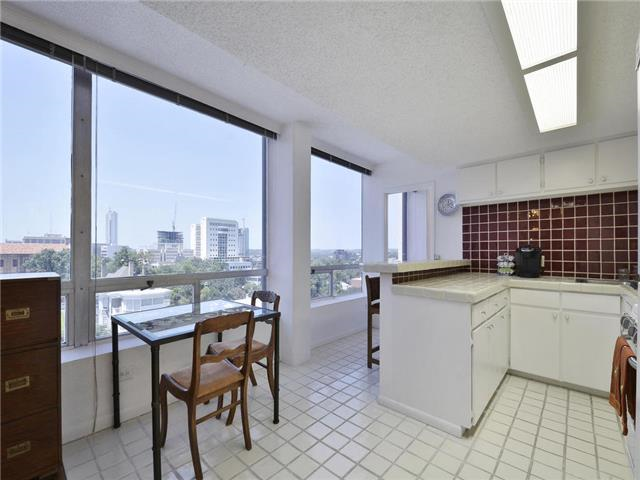
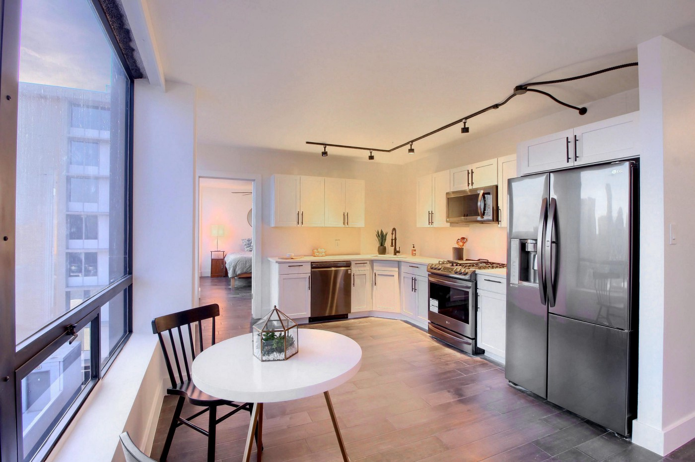
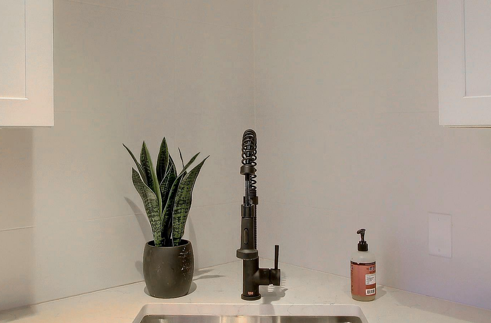
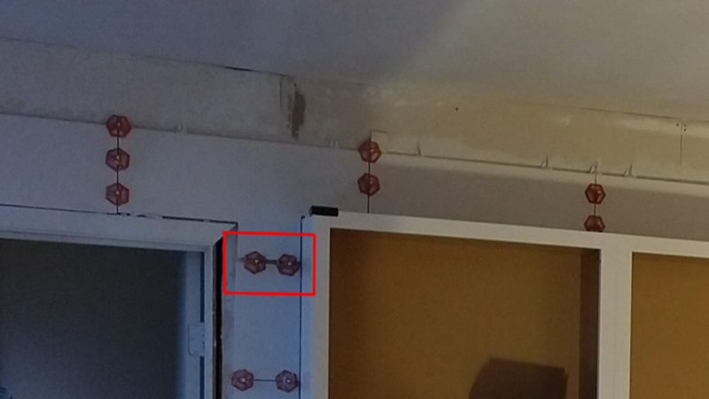

Remodeling a Condo w/ Code
Warning
Do not try this at home.
No, really. It's a world of hurt.
Thanks!
http://edgeatx.org/slides
Corey Butler (
@goldglovecb
)
Coding a Condo? Wha...?!
Hey Corey, you realize a condo is physical, not virtual, right?
Planning
What's not to love? (hint: everything)

1970's Cabinets
1970's Impossible-to-Clean Tile
Sofits & Popcorn
A bar with stools that block the hall.
After

Tile Wall

Harder Than It Looks
1
/
16
" can make a major difference

Code
Code FTW
JS: 56 LOC, CSS: 197 LOC, HTML: 90 LOC
Rapid & Dynamic Visualizations
Reporting
Progress Tracking
Confidence & Time Savings
FREE
More...
Medium.com:
How I Used CSS & JS to Remodel a Condo
Codepen.io:
Remodeling w/ Code
Thanks! (For real this time)
http://edgeatx.org/slides
Corey Butler (
@goldglovecb
)
←
→
/
Go to slide:
#